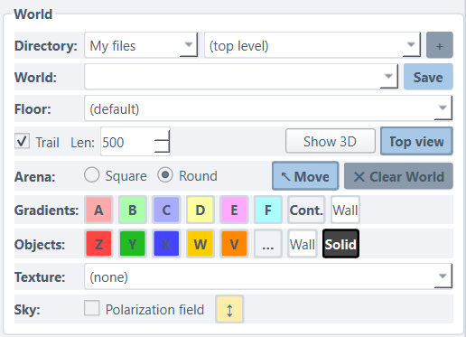
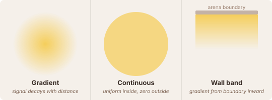
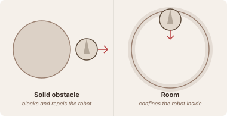
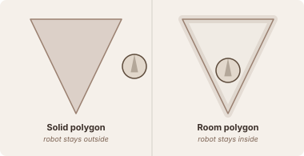
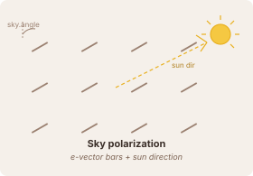

Creating Worlds
The arena is the environment your robot lives in. It can contain gradient fields that sensors detect, solid obstacles that block movement, and a sky polarization pattern for compass experiments. Everything you place is saved with the session config and reloaded automatically on the next run.
All world editing happens in the World tab of the control panel. Changes take effect immediately — you can reshape the world while the brain is running.

World file
Saves and loads the arena independently of the session and brain.
Dir — choose My files or 🔒 Simulator (read-only built-in worlds), then a folder inside it. + creates a new folder. World — lists the JSON files in the chosen folder; selecting one loads it immediately. Save — opens a dialog: pick a folder and type a name, with a live preview of the destination path. Saving a Simulator world writes your own copy instead of overwriting the original.
Floor
Selects a texture for the floor, drawn from your textures/ folder. (default) keeps the built-in checker pattern. The floor texture is visible in the MuJoCo Top view and Show 3D views only — the flat 2D canvas does not render textures.
Trail and 3D views
Trail — enables the position trail drawn in the arena. Len sets how many past positions are kept (10–5000).
Show 3D — opens a separate MuJoCo 3D viewer window (enabled when MuJoCo is running).
Top view — replaces the flat 2D canvas with a MuJoCo overhead render. Object editing still works in this mode; switch back to 2D to see gradient patches.
Arena
Square / Round — sets the arena boundary shape. Round is the default; Square gives four flat walls instead of a circular perimeter.
↖ Move — toggle. While active, drag any gradient patch, solid object, or robot disc to a new position. You can also Alt+drag directly from any other tool without switching to Move mode first.
✕ Clear World — removes all gradient patches and objects (walls stay), after asking for confirmation.
Gradient fields
Gradient patches are invisible stimulus fields — the robot passes through them freely, but sensors like GradientSensor detect their signal.
Each patch has a label (A–F) and a matching colour (A = red, B = green, C = blue, D = yellow, E = magenta, F = cyan). Sensors subscribe to a label; a sensor set to label A reads only patches labelled A. Multiple patches with the same label stack by maximum — the sensor receives the highest reading over all of them.

Gradient (default)
Signal decays linearly from 1.0 at the centre to 0.0 at the edge:
To place: click one of the letter buttons (A–F) in the Gradients row, then drag on the arena (drag start = centre, drag end = radius).
Continuous
Same shape, but the signal is a flat 1.0 everywhere inside the radius and drops to exactly 0.0 at the boundary. Useful for food zones where stimulus intensity should not depend on position within the patch.
To place: toggle Cont. on before dragging.
Wall band
A gradient that emanates from the arena boundary inward. It covers the entire perimeter — there is no centre point. Useful as a looming-wall input for avoidance behaviours.
To place: click Wall in the Gradients row, then drag (the drag distance sets the band width).
Mounted gradient
A gradient patch that follows a specific robot. Place it by starting your drag from inside that robot's body disc. Useful for interoceptive signals ("smell of self") or for creating a scent field another agent can track — see the courtship scenario in Braitenberg Vehicle III.
Solid objects
Circular objects that physically block the robot. The simulator pushes the robot out on contact. Distance, collision, whisker, and camera sensors all detect solid objects.

Colours — five presets (Z red, Y green, X blue, W yellow, V orange) plus a … custom colour picker.
Wall — switches drawing to polygon-wall mode (see below).
Solid / Room — toggles the object type for the next placed circle:
- Solid — a filled obstacle the robot stays outside.
- Room — the robot is kept inside the circle. Rendered as an annular ring. Toggle Solid off to activate Room mode.
To place: select a colour, choose Solid or Room, then drag on the arena (drag start = centre, drag end = radius).
Texture
Assigns a texture image to objects and polygon walls placed afterward. Textures are PNG files in textures/ in your files folder. (none) = flat colour only. Textures render in the MuJoCo Top view and Show 3D only.
Polygon walls
Freehand polygon boundaries drawn by clicking vertices on the arena. The polygon closes automatically when you click near the first vertex (or after at least 3 points). Hold Shift to snap edges to 45° increments. Right-click while drawing to cancel.
The Solid / Room toggle on the Objects row controls whether the polygon is a wall the robot stays outside (Solid, filled) or a boundary the robot stays inside (Room, hollow band).

To draw: click Wall in the Objects row, then click vertices on the arena.
Sky polarization
A global celestial field that the SkyCompassSensor reads. It has no physical presence and does not affect any other sensor.

Tick Polarization field to enable it. Click ↕ and drag on the arena to set the e-vector angle. The sun direction is perpendicular to the e-vector: sun_dir = sky.angle + π/2.
Sensor interaction table
| Object type | GradientSensor | ColorSensor | DistanceSensor | CollisionSensor | WhiskerSensor | CameraSensor | SkyCompassSensor |
|---|---|---|---|---|---|---|---|
| Gradient circle | ✓ | — | — | — | — | — | — |
| Continuous circle | ✓ | — | — | — | — | — | — |
| Wall band | ✓ | — | — | — | — | — | — |
| Solid obstacle | — | ✓ | ✓ | ✓ | ✓ | ✓ | — |
| Room circle | — | ✓ | ✓ | ✓ | ✓ | ✓ | — |
| Polygon wall | — | — | ✓ | ✓ | ✓ | ✓ | — |
| Sky field | — | — | — | — | — | — | ✓ |
Tips
- Right-click any placed object to delete it.
- Alt+drag a patch or obstacle directly from any draw tool to reposition it without switching to Move mode.
- Ctrl+drag duplicates a patch or obstacle — the clone (same radius, colour, label) follows the cursor; the original stays put.
- Double-click a gradient patch to set its quantity (default 1; type any number, e.g.
0.9999999999999— kept at full double precision). The patch's signal is multiplied by it, so a patch with quantity0.9peaks at0.9at its centre instead of1. The patch looks the same on screen; the value is saved with the session as"quantity". - Shift while repositioning or duplicating snaps to a grid spaced by the Grid size setting in the Physics tab. The grid always aligns to arena centre
(0, 0). Ctrl+Shift-drag is the quickest way to build a pair of exactly mirrored stimuli. - Multiple gradient patches with the same label stack by maximum, not sum. Overlap several patches to widen a field without raising its peak intensity.
- Sessions save the entire world state (patches, objects, walls, sky, floor, arena shape). Use Session tab → Save to snapshot it.